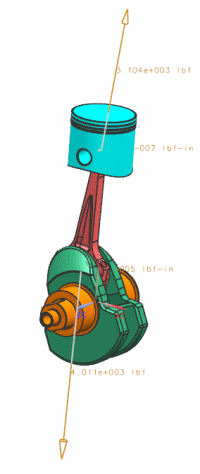

标记最大力发生的时间步
您将使用电子表格的筛选功能来确定最大力发生的时间步，然后将它标记为运动仿真中“感兴趣的时间步”。
在电子表格中执行以下步骤：
-
滚动到电子表格顶部
-
选择标题行(第2行)
-
选择数据菜单并点击筛选按钮
-
在 E 列(J002_j_FM)，点击
 筛选箭头并清除全选复选框，然后选中最大力(4010.928)旁的复选框并点击确定。
筛选箭头并清除全选复选框，然后选中最大力(4010.928)旁的复选框并点击确定。 -
电子表格现在只显示出含最大力的记录(最大力发生在多个时间步中)，在列 A 中指出了时间步。
-
选择电子表格中的行21(时间步18)。
在载荷传递对话框中执行以下步骤，保持电子表格打开并让载荷传递对话框再次显示(对话框已经打开，但可能隐藏在电子表格后面)。
-
 移动至单元格位置
移动至单元格位置动画移动到时间步18，在对话框中，当前步输入框应该显示18。

-
 添加当前的时间步
添加当前的时间步文本行0.180000 秒显示在相关的时间步列表中。
-
确定
载荷传递对话框
 直接关闭电子表格，没有必要保存电子表格，除非您想在以后参考它。
直接关闭电子表格，没有必要保存电子表格，除非您想在以后参考它。
 保存(标准工具条)
保存(标准工具条)
这将保持捕捉的载荷到运动仿真文件中。
|
注意 |
在这个时候保存很重要，如果不保存，捕捉的载荷将不会保存到运动仿真文件中。 |